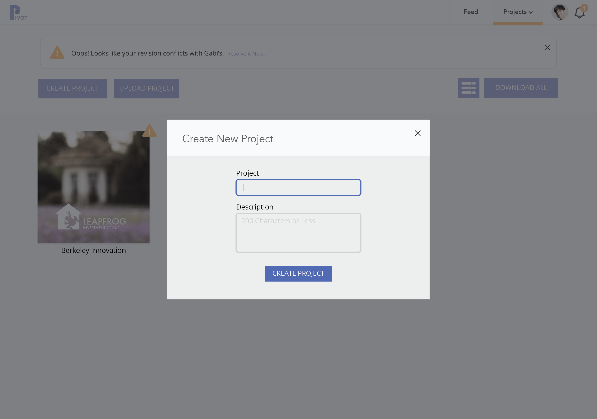

Pivot
This past semester (September to December 2015), I was involved in Berkeley Innovation (BI), Cal's Human-Centered Design Organization. Through BI, I was placed into a team of four and assigned to work with Vertigo Software (recently acquired by MLBAM). My team and I designed and prototyped a version control system for designers, utilizing concepts from Git and transforming said concepts into designer-friendly features. My personal contributions included conducting competitor analyses; working on ideation; and designing the feed, project views and interactions, the user view, the collaboration feature, and the app map, through all fidelity mockups.
Read About the Process See Prototype
